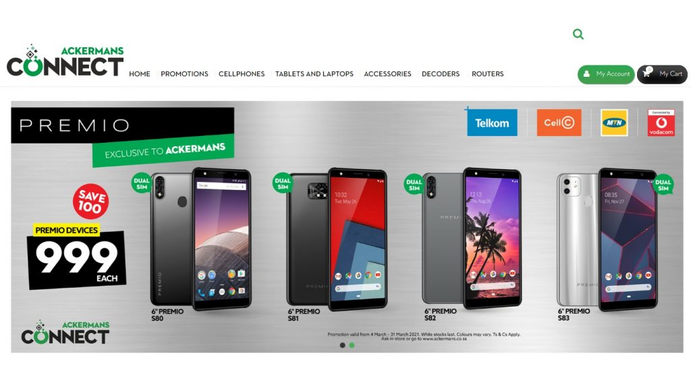

Ackermans is a South African chain of clothing retail stores. Founded in 1916 in Wynberg, Cape Town, Ackermans has over 700 stores across Southern Africa, including in Namibia, Botswana, Lesotho, eSwatini and Zambia and is headquartered in Kuilsriver near Cape Town. In 2015 Ackermans is rated the second best clothing store by the South African Consumer Satisfaction Index.
Our purpose at Ackermans is: Bringing Value to Life and it lies at the heart of everything we do, whether it’s to the lives of our customers and employees or to the wider community and value retailing as a whole.
We firmly believe that the future of our company rests in the hands of the people we employ. As such, every new Ackermans Phadima is put through a rigorous selection process and chosen with the greatest of care. This process ensures that each new Phadima is a perfect fit for our company culture and will thrive in our environment of encouragement, motivation and inspiration.
Find affordable family clothing such as women's apparel, men's clothes, children's clothing and toddler clothing at all of our Ackermans branches. We cater for the whole family: from cute, safe quality products for babies and toddlers, to elegant and sporty styles for parents and the latest trends in fashion for teenagers and kids. Top quality brands, as well as airtime, cellphones and starter packs from leading companies like Vodacom, MTN, Cell C and Telkom. A Pleasant Shopping Experience – there is no need to shop around. Friendly staff are always on hand to assist and the shop ambience is bright, cheerful and well laid out.
